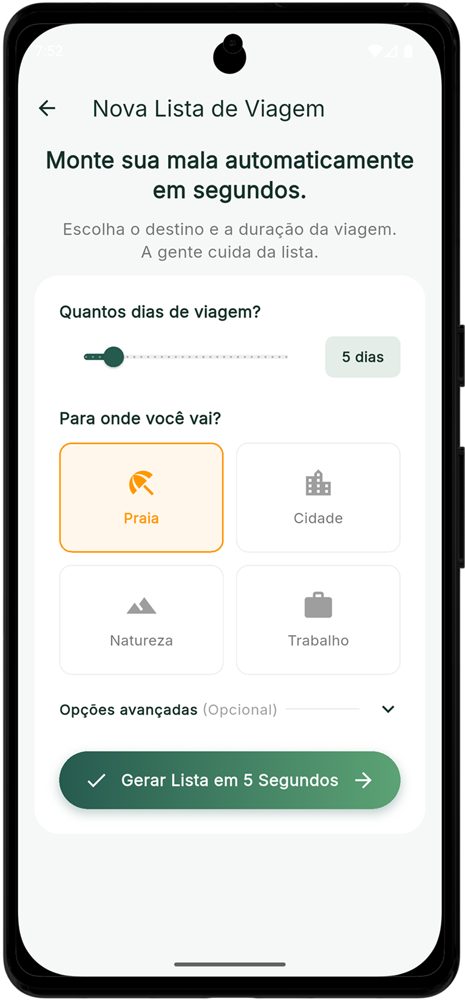
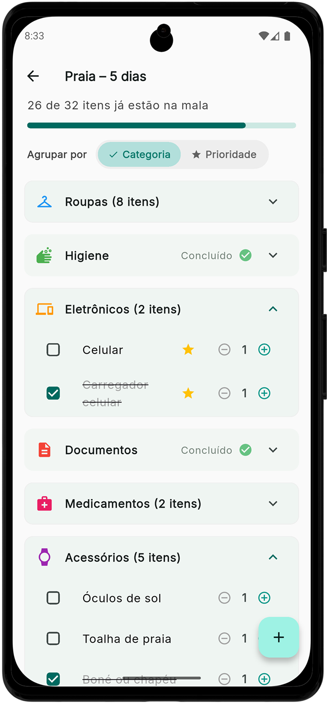
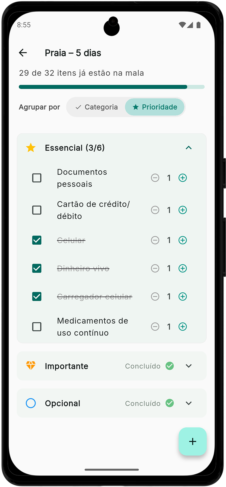
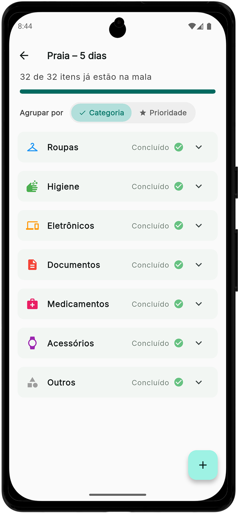

Elige el tipo de destino y la duración del viaje. Mala Pronta crea una lista de equipaje adaptada a ti.


Elige el tipo de destino —Playa, Ciudad, Naturaleza o Trabajo— y cuántos días durará tu viaje.
La aplicación genera automáticamente una lista completa y organizada según tu tipo de viaje.
Marca cada artículo y sigue tu progreso para saber qué te falta por guardar.
Playa, Ciudad, Naturaleza o Trabajo. Tú eliges el destino y nosotros te ayudamos a decidir qué llevar.
Ropa, Higiene, Electrónica, Documentos y Medicamentos. Así es más fácil comprobarlo todo.
Consulta los artículos según su prioridad: Esencial, Importante y Opcional.
Comprueba de un vistazo cuántos artículos ya has guardado.
Añade, elimina o modifica cualquier artículo.
Elige tu destino
Lista por categorías

Vista por prioridad

¡Todo en la maleta! ✓
Sí, Mala Pronta es completamente gratis
Mala Pronta funciona sin conexión a internet
¡Claro! La lista es un punto de partida. Puedes añadir lo que falte, eliminar lo que no necesites y adaptarla a tu gusto.
Sí, Mala Pronta está disponible en App Store (iPhone y iPad) y Google Play (Android).
Sí. Puedes crear y guardar tantas listas como quieras, ideal si tienes varios viajes previstos o necesitas listas para distintos destinos.
Sí. Mala Pronta tiene opciones para Playa, Ciudad, Naturaleza y Trabajo, cada una con una lista adaptada a lo que necesitas.
Horarios, documentos, coche, móvil, equipaje y últimos preparativos para salir sin prisas.
Hay cosas pequeñas que marcan una gran diferencia. Descubre qué conviene llevar siempre.
Guardar las cosas en el orden equivocado puede complicar el viaje antes de empezar. Aprende a organizarte.
Ropa, protección solar, accesorios y documentos: todo lo que necesitas para un viaje a la playa.
Casa, mascotas, plantas, comunicaciones y asuntos digitales: todo listo antes de salir.
Descarga la aplicación gratis y prepara tu próxima lista en menos de 30 segundos.